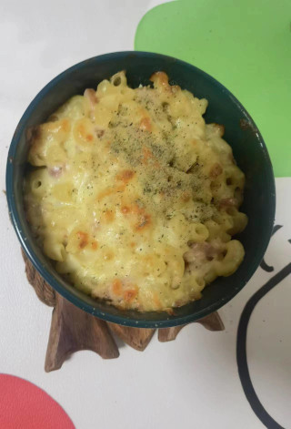
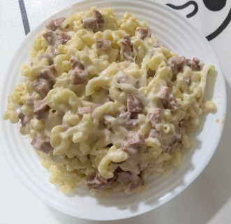

奶酪培根通心粉的做法
 
这是一道美味的奶酪培根通心粉(Mac and Cheese)，适合四人享用。它结合了浓郁的奶酪和香脆的培根，简单易做，是一道受欢迎的美式家常菜。
预估烹饪难度：★★★
必备原料和工具
- 通心粉
- 奶酪
- 肉类
- 洋葱
- 黄油
- 面粉
- 牛奶
- 大蒜
计算
每次制作前需要确定计划做几份。一份正好够 2 个人吃。
- 通心粉 100-125g
- 奶酪 40-55g，若要烘烤额外准备 25g， 条状
- 培根或其他肉类 100-125g
- 洋葱 25g-40g 切成碎
- 黄油 15g
- 面粉 10g
- 牛奶 125ml
- 大蒜半瓣，切碎
操作
- 奶酪要磨成碎末
- 洋葱切成条状
- 通心粉用微咸的水煮 6 分钟
- 中火
- 锅中放入黄油，等待融化
- 加入洋葱
- 洋葱软化后加入大蒜
- 大蒜香味出来后，加入肉类，等待 5 秒
- 小火
- 分四次加入牛奶，每次搅拌 5 秒后再加下一次
- 加入面粉并充分搅拌
- 加入奶酪并搅拌均匀
- 将通心粉和奶酪搅拌
- 如果不打算烘烤，可以直接吃了
- 烘烤：
- 预热烤箱至 180°C
- 将额外的 50g 芝士铺在通心粉之上
- 等待烤箱预热至 180°C 后，将通心粉放入
- 烤至表面金黄,约 24 分钟
附加内容
本料理及其不健康，有大约 1300 大卡，80g 脂肪，不建议常吃。
如果您遵循本指南的制作流程而发现有问题或可以改进的流程，请提出 Issue 或 Pull request 。